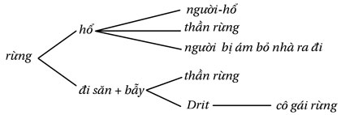
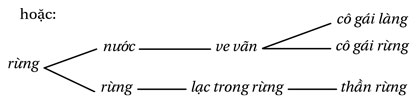
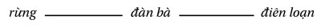
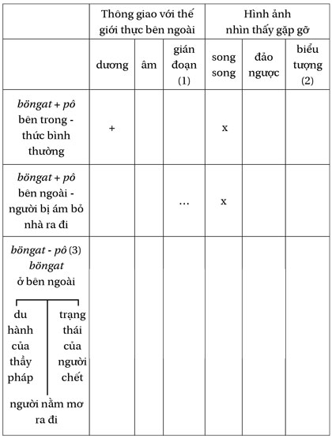
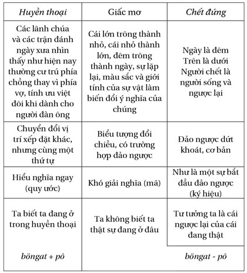
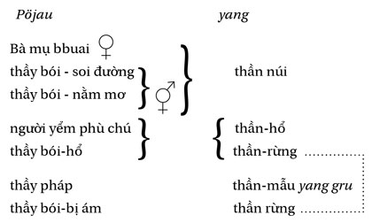
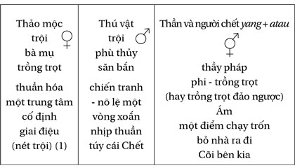
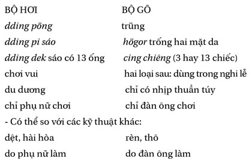

Chương Phụlại Đi Qua
Lại đi qua… như là những cách khác để nắm bắt đề tài, để mô tả cảnh tượng mơ tưởng. Một lối đi qua không cho ta nhìn thấy hết mọi thứ, tôi thử đề nghị vài lối đi qua khác; bảng chỉ dẫn gợi cho ta nhiều hơn: chẳng hạn, lối vào hổ đưa chúng ta trở về những đoạn nói đến việc đi săn, việc kết ước, chuyện người-hổ, v.v…, tức là tất cả những gì tư duy Giarai đề cập đến con hổ ấy, những gì nó gắn kết với hổ và trong những bối cảnh nào, những gì nó gợi cho so sánh những cái này với nhau.
Nhưng điều bảng chỉ dẫn không cho phép ta làm được, là một cuộc đi qua ở tầm mức những kết hợp các hình ảnh. Chẳng hạn rừng gọi đến hổ, hổ gọi đến người-hổ…

hoặc

Sẽ có đủ chất liệu cho cả một pho từ điển dày cộp, mỗi hình ảnh gợi tới một hình ảnh khác trong một góc nào đó của miền mơ tưởng. Nhưng ở đây tôi đã chọn đi theo cái tuyến phát triển này.

Bởi tôi thấy nó có vẻ quan trọng hơn cả, vì sức nặng không chỉ về cảm xúc mà cả về quan niệm của nó. Như, trong số nhiều điều khác, nó đã tạo cơ hội cho ta làm rõ cái cặp đôi böngat và pô, khi tách rời nhau, đó là đêm và ngày, cái vô hình và cái thường biết hằng ngày (xem tâm sự của Löng (trang?), người tình của người đàn bà đã chết (tr?). böngat không nhìn thấy bằng con mắt của pô (trừ khi đang thức), nó nhìn thấy cái khác. Sự cám dỗ muốn đi xem cái phía bên kia. Không thỏa mãn với cái thường ngày nhàm chán. May thay ta đã có ban đêm để mà nằm mơ và, nếu ta có thể điên một chút, cả ban ngày nữa! Trong giấc mơ, böngat nhìn thấy điều ngược lại với cái pô sẽ thấy (và sau đó cắt nghĩa); đối với người đã chết atau tự thấy mình đang sống cũng vậy. Đối nghịch với những hình ảnh “đảo ngược” đó là những hình ảnh “song song” của người bị ám möyun thấy cô gái-rừng giống hệt như người vợ của mình ở làng. Như vậy có một mối liên hệ giữa sự tách rời của böngat với pô và sự đảo ngược các hình ảnh - được biểu hiện trong bảng sau đây:

(1) Trong trạng thái thức, sự thông giao là dương (+), mọi sự diễn ra trong hai chiều; người nằm mơ và người đã chết chỉ còn thông giao với cõi bên kia (-); đối với người bị ám hay người thầy pháp, thì người ta chỉ thấy hoặc là những người thân của mình hoặc là các yang , không bao giờ cùng chung.
(2) Trong cuộc bỏ nhà ra đi, người ta nhìn thấy ảnh phản chiếu của thực tại, trong giấc mơ người ta thấy thực tại đảo ngược (ngày là đêm); người thầy pháp nhìn thấy cái khác và dùng những vật dụng biểu tượng.
(3) Trong loại hạng này, cùng với những người thầy pháp người nằm mơ - người chết, lẽ ra còn có người ma lai röhung , tuy nhiên, khác với những người kể trên vốn có tồn tại thực, dù các cuộc “đi ra” của họ có là mơ tưởng đến đâu, ma lai chỉ tồn tại trong trí tưởng tượng của những người khác, cho nên chúng không thể ở trên cùng một bình diện.
(xem bảng ở trang tiếp theo)
Các tình thế của người nằm mơ và người đã chết đảo ngược so với người đang thức và người bị ám đang bỏ nhà ra đi. Người thầy pháp thì đứng riêng ra, ở giữa hai nhóm này, như một người trung gian, điều đó rất thích hợp với ông ta, ông vượt qua sự phân biệt. Người đã chết là người dứt khoát và người duy nhất ở về phía bên kia của “tấm dệt”; đối với người đang chết, cõi mơ tưởng sắp trở thành hiện thực. Ngoài những “chuyện đời” quý báu đã giúp ích tôi thật nhiều, sau đây là một câu chuyện đặc biệt, “chuyện chết”. Ông bạn già Nèm của tôi, người Sre ở Kola, có vợ là thầy pháp, là một người lao động cật lực cho đến lúc chết, trong cơn mơ-hấp hối của mình, ông thấy mình đang ở vào lúc kết thúc một ngày lao động. Trong mơ tưởng của ông, ông chặt gỗ và không sao vác nổi. Giữa những hơi thở cuối cùng của người sắp chết, ông nói với tôi: Không thể… tôi không thể vác nổi nữa… nặng quá… không thể đi về được… không còn được nữa… không thể… chết… chết (Tl. 10. 53). Trong căn lều của ông, ngồi trên chiếc chiếu của ông, lúc đó ông đi qua. Ông thấy tôi đang làm việc cùng ông; có phải ông đã nhầm khi tưởng đã kéo tôi đi theo ông? Ông không trở về, và tôi không rời ông.
Có thể tinh luyện hơn sự phân tích đã được tóm tắt trong bảng trước, ở cột gần cuối, về sự đảo ngược các hình ảnh so với cái sống thật hằng ngày, trong xã hội.

Trong chuyển tiếp từ huyền thoại sang đến cái chết này, các hình ảnh giấc mơ chiếm một vị trí trung gian giữa những hình ảnh của huyền thoại và những hình ảnh gán cho người chết - dùng phép ngoại suy và suy luận triệt để lo-gíc những gì ta thấy khi “đi ra” lúc nằm mơ, là một bước đến cái chết.
Nhưng điều mà bảng như trên không thể làm bật lên, tuy nó chỉ được lập nên bằng những cái ấy, và nó chỉ “nói lên” cái ấy, đó là tầm quan trọng của các từ. Ở đây, tôi phải nói rõ thêm.
Từ là những đồ vật; tự chúng, chúng chẳng là gì cả, chỉ là chính chúng; chúng chỉ có nghĩa trong một ngữ cảnh, chúng chỉ mang cái nghĩa mà diễn từ nói đến. Một chiếc lá xoan trong rừng chỉ là một chiếc lá xoan, và nó chẳng dùng để làm gì cả; nhưng trong ngữ cảnh một cuộc lên đồng của thầy pháp và dưới mắt xã hội đã chấp nhận quy ước đó, nó biểu thị một trung gian cần thiết và hiệu lực giữa miệng người thầy pháp và cơ thể người bệnh. Một viên thạch anh chỉ là thạch anh, và ai cũng biết; nhưng nó được gọi là hrèl, thì nó được xem là một cái bùa, mang những giá trị khác nhau đối với người phụ nữ trồng trọt, thợ săn, chiến binh, hay thầy pháp, họ phủ lên nó những ý nghĩa được chấp nhận theo truyền thống và được lưu truyền bằng các từ. Cũng như vậy, nếu tôi bảo với người láng giềng của tôi rằng trông anh ta thật khỏe mạnh, hay lúa của anh ta trổ thật tốt, đó có thể chỉ là những lời nói bâng quơ, nếu chúng tôi là bạn của nhau, đó là một lời khen; nhưng nếu anh ta nghi tôi là “phù thủy” (điều chỉ tồn tại trong tưởng tượng của anh ta) lời nói của tôi có thể khiến anh ta đổ bệnh hay phá hoại mùa màng của anh ta. Qua ví dụ này, ta thấy khái niệm ngữ cảnh được mở ra rất rộng: nó không chỉ gồm có câu nói (tôi giả định đã sử dụng cùng một từ trong cả ba trường hợp), mà cả giọng nói, cái nhìn, ý định của tôi và nhất là cách hiểu của người đối thoại - anh ta sẽ làm gì với điều tôi nói với anh ta? - bởi vì cuối cùng chính là anh ta, “khi lời nói đến”, sẽ gán cho câu nói của tôi một ý nghĩa, ý nghĩa-cho-anh ta, trong khi tưởng rằng diễn dịch ý nghĩ của tôi.
Để nói đôi điều gì đó về miền mơ tưởng, ở đây tôi chỉ làm mỗi việc là sử dụng các từ, chúng phần lớn diễn dịch một diễn từ nói, là cái duy nhất cho phép tôi đến được cõi mơ tưởng ấy. Lời nói trực tiếp, lời nói bằng hình ảnh, lời nói hình tượng, “nói rừng” puai’ dlei . Diễn từ của người thầy lang, của người thầy pháp, của người bị ám, nó chép lại các hành ngôn cận kề, nhưng khác với lời nói chuyện trò, những lời nói thông thường, dù nó cũng gồm các từ giống như vậy. Nhất là diễn từ của huyền thoại, nó cũng là một sự giải thoát; khi người ta kể một huyền thoại, là người ta tự kể về chính mình, theo một cách nào đó. Cái chương trình, được ghi nhớ và thể hiện, của mỗi người kể chuyện, chẳng phải là vô tư; chắc chắn là nó được điều kiện hóa bởi môi trường (là điều tôi đã được nghe một người kể chuyện lớn tuổi nói), nhưng nhiều hơn là bởi sở thích cá nhân (tôi kể những chuyện thích hợp với tôi, tương thích với cõi mơ tưởng của tôi). Quyển sách này là vậy.
Diễn từ là huyền thoại về những người sống bên lề, những “trường hợp” (như Drit, nhưng “Drit chính là chúng ta”) gần với diễn từ của các “trường hợp” về chính họ: hành ngôn cận kề nhau, các công thức giống nhau, mô tả một cõi mơ tưởng ở ngoài kia; nhưng trong loại thứ hai, đối tượng nói ở ngôi thứ nhất - ít ra là thông thường như vậy, bởi có khi ta thấy người bệnh khi nói về chính mình lại nói nyu rwa’ “nó đau”, nó ở đây chỉ cái pô mà anh ta đã tự tách mình ra. Diễn từ về chính mình của người không bình thường, người ngông cuồng, khiến anh ta an tâm bằng cách định vị anh ta trong cả một loạt người, một truyền thống, và do đó tái hội nhập anh ta vào một xã hội rộng lớn hơn, ở đó anh ta biết mình là kẻ sống bên lề. Huyền thoại, và nói chung mọi diễn từ của một tộc người thiểu số chuẩn hóa, biện minh tính chất bên lề tập thể của tộc người tự biết mình là thiểu số và nhận rõ vị trí của mình bên lề các dân tộc lớn hơn. Và mọi người đều tự kể về mình, để mà cởi bỏ, để tự trấn an, để tạo nên một hình ảnh nào đó về mình. Đấy là một cách thực thi một quyền lực, ít ra là trong thời gian của lời nói; cất lên lời nói cũng tức là nắm lấy quyền lực; từ chẳng là gì cả, nhưng, với diễn từ, người ta tưởng tượng mình đã làm mọi thứ. Trong khi tự kể về mình, Löng thấy thỏa mãn; ông có một điều gì đó hơn chúng ta là những người nghe ông, cõi mơ tưởng của ông tràn ngập cõi mơ tưởng của chúng ta.
Trong số những lối đi qua khác có thể có, tôi đề nghị thêm một lối nữa, gắn chặt với lối vừa đi. Tôi chỉ làm việc cắm các cọc tiêu, như một lộ trình du lịch.
Trí nhớ/lãng quên sẽ là cặp đôi chủ đạo ở đây:
- Vai trò căn bản của trí nhớ trong một nền văn minh hoàn toàn truyền khẩu - nghi thức “mở tai” - ghi nhớ các huyền thoại và các giấc mơ để kể lại chúng.
- Sự lãng quên ở những người say và những người bị ám, họ không còn nhận ra những người chung quanh; một cõi mơ tưởng đã thay thế thực tại bị phủ mờ đi - những sự lãng quên trong các huyền thoại (các đồ vật bị quên, tên các nơi chốn bị quên, đưa đến các tai họa) - quên cái có thực và ảo ảnh về những hình ảnh khác, việc khó kéo theo:
- Nhìn thấy hay không nhìn thấy (cô cháu gái của Löng khiến cậu ta nhìn thấy đàn trâu của mình kỳ thực không còn ở đấy nữa) - các ảo ảnh đảo ngược (thấy mặt trời còn cao, trong khi đã là đêm) - tự thấy mình mặc quần áo trong khi hoàn toàn trần truồng, v.v…

Nếu một tấm bảng, mà một cái nhìn tổng quát đối với một số người có thể nói nhiều hơn là một lối viết tuyến tính, có thể giúp ta hình dung lĩnh vực tưởng tượng, thì sau đây là đôi ví dụ về những mẫu biểu có thể thiết lập.
Hệ thống loại hình các pöjau , thầy lang, phù thủy, thầy pháp, gắn với các thần yang , được mơ tưởng, mà đối tượng giữ một mối quan hệ ưu tiên:

Bảng này, ít ra, cũng làm rõ mối quan hệ giữa những người bị ám và các con “hổ”, ta cũng có thể làm như thế với các cô gái-rừng, các cô gái-hổ, các cô gái-ma, các cô gái ma lai; cũng như với những người không bình thường, từ người đần đến người điên phải cởi trói. Nhưng tôi thấy việc đó chẳng thêm được gì vào những điều đã viết.
Trái lại, tôi muốn lập một bảng sau đây trước khi kết thúc cuốn sách này:

(1) Trong số nhiều nhạc cụ Giarai, ngoài bộ dây, còn có bộ hơi và bộ gõ:

Tương ứng với lối chia ba phần trên đây là ba “quyển” của công trình này - cấu âm và tản văn nhân học.
Rừng, Đàn bà và Điên loạn là ba mối đe dọa và ba niềm quyến rũ đối với người đàn ông. Người đàn bà là niềm điên loạn của người đàn ông và anh ta chỉ có thể tìm thấy nàng trong rừng, khu rừng của những mơ tưởng và những huyền thoại. Đấy là một bài toán đối với người đàn ông , dường như vậy; còn đối với một người đàn bà, thì đấy chỉ là hiển nhiên.
“Những con người ở cõi bên kia”, trong giấc mơ và trong huyền thoại, những người thiểu số và những người sống bên lề… Nếu những con người ấy gây phiền toái nhiều như vậy, ấy là vì họ rất mạnh, một sức mạnh đến từ cõi mơ tưởng của họ, từ “phía bên kia” - điều chúng ta không muốn và không thể thừa nhận, vì cái ưu tiên kinh tế ngăn cản chúng ta. Nhưng phỏng sống làm gì, nếu không còn có thể mơ mộng và tưởng tượng?